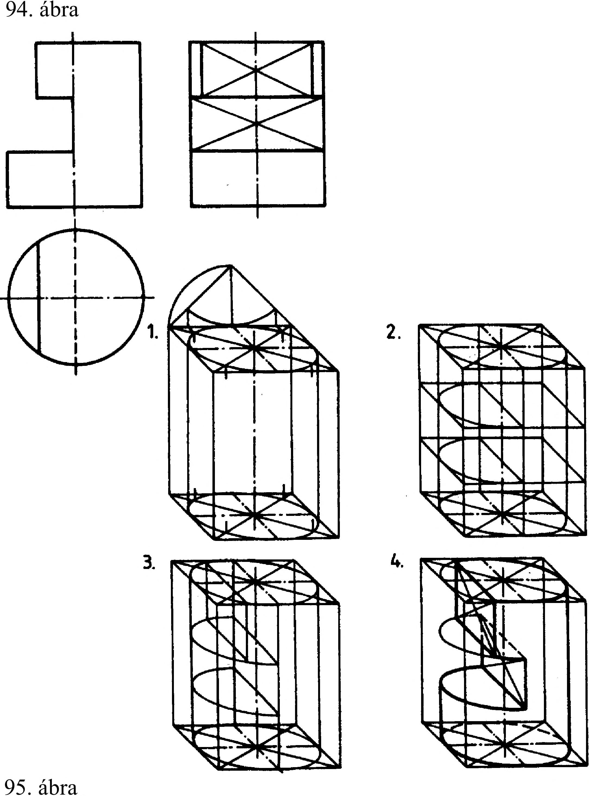

4. Axonometrikus ábrázolás 4.3. A görbe felületű testek axonometrikus ábrázolása A jellegzetes görbe felületű testek, a henger a kúp és a gömb axonometrikus ábrázolása esetén az axonometrikus tengelyekkel párhuzamos élek és síkok megrajzolása a legkönnyebb, ezért törekedni kell arra, hogy minden test befoglaló formáját az axonometrikus tengelyekkel meghatározott, ill. azokkal párhuzamos síkok határolják. A hengernek és a kúpnak ez a síklapokkal határolt befoglaló formája a kocka vagy a négyzetes hasáb, a gömbnek a kocka. A 93. ábra a kocka felületeire rajzolható körök axonometrikus képeit mutatja, összefoglaló ábrát adva ezzel a körvonal axonometrikus képének - az ellipszisnek - alakjáról és helyzeteiről szabályos beállítás esetén. axonometria Kétméretű axonometria Frontális axonometria 4.3.1. A henger axonometrikus ábrázolása A henger axonometrikus ábrázolását a 94. ábra mutatja. A szerkesztés alapja a kör egyméretű, kétméretű és frontális axonometrikus képének ismerete. Az ábrázolást kezdjük a síklapokkal határolt befoglaló forma , a kocka vagy négyzetes hasáb megrajzolásával az adott tengelyrendszerben. Rajzoljuk meg a kör axonometrikus képét az alaplapra, majd az ellipszis kirajzolásához szükséges nyolc jellegzetes pontot vetítsük át a henger másik záró felületére, és rajzoljuk meg az ellipszist. A két ellipszishez érintőt rajzolva lehatárolható a henger. Megszerkeszthető a henger axonometrikus képe a teljes befoglaló forma felrajzolása nélkül is. Ebben az esetben csak az alaplapot rajzoljuk meg. Az alaplapon nyolc jellegzetes pontból alkotót rajzolunk, erre mérjük a henger testmagasságát, és így rajzoljuk meg a másik zárófelületet. 4.3.2. Forgástestek axonometrikus ábrázolása A csonkolt henger frontális axonometrikus képének szerkesztéséhez ismernünk kell a tárgyat vagy annak vetületi rajzát. Szemléltető kép: A csonkolt mértani testek - így a csonkolt henger axonometrikus képének szerkesztési módszerei: 1. A felülnézetből kiindulva a jellegzetes pontok térbeli helyzetének megszerkesztése. 2. A befoglaló formából kibontva (a 95. ábra négy lépésre bontva mutatja ezt a szerkesztést). 3. A csonkolt mértani test elemeiből felépítve. Az ellipszisek pontos megrajzolásához használjunk ellipszisvonalzót. A 96. ábrán csonkolt testek három vetülete valamint egyméretű, kétméretű és frontális axonometrikus képe látható. 93. ábra axonometria Kétméretű axonometria 25
